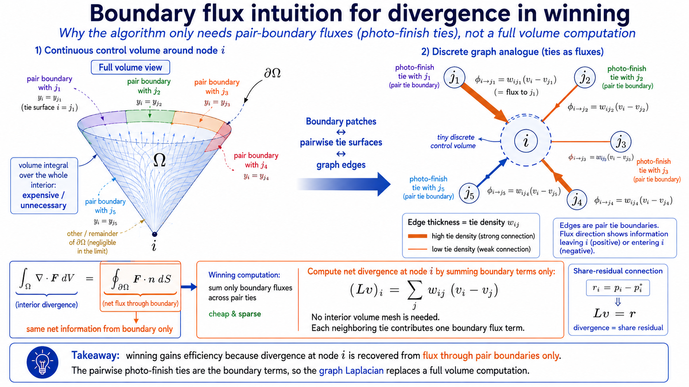
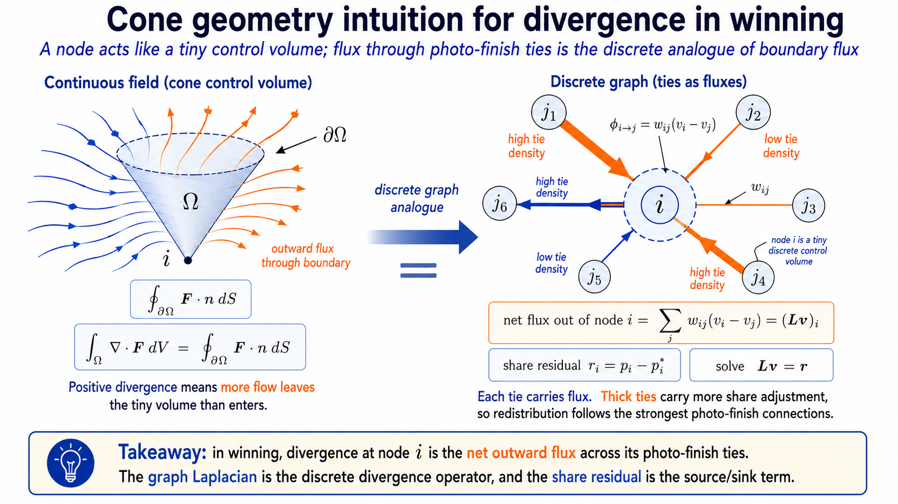
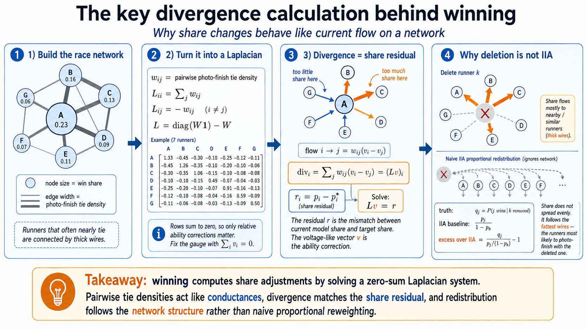

How it works
The package prices and inverts contests — races, choices, markets — at scales where the standard methods give out. Three ideas carry all of it, each with a history credited in its section: the choice event is one-dimensional, so one shared field prices every contestant at once; correlation enters by conditioning, so it costs a low-dimensional quadrature rather than an \(n\)-dimensional one; and the Jacobian is a boundary flux, which makes inversion a convex program on a graph. This page walks through each, with the full derivations and every measured number in the paper.
1. A race is decided at the winning time
Give contestant \(i\) a running time \(X_i\) with density \(f_i\) and survival \(S_i\) (min wins; a choice model is the same thing with utilities negated). However many contestants there are, contestant \(i\) wins by finishing at some time \(x\) with everyone else still out on the course:
\[ p_i \;=\; \int f_i(x)\prod_{j\ne i}S_j(x)\,dx . \]That integral is one-dimensional no matter how large \(n\) is — an observation as old as the subject. Domencich and McFadden wrote the general random-utility choice probability as a one-dimensional integral over the winning utility in 1975, with the honest caveat that its integrand generally conceals a multivariate calculation; under independence the integrand really is a density times a product of univariate CDFs, and that one-dimensional quadrature has been standard ever since. The smooth methods of the correlated-probit literature — GHK, Genz's quadrature, minimax tilting — treat \(p_i\) as an \((n-1)\)-dimensional orthant integral and pay for that view one alternative at a time (frequency simulation does return the whole vector per draw, but is not smooth in the parameters). And even the independent one-dimensional view, evaluated per alternative, re-forms an \((n-1)\)-fold product \(n\) times — which is where the representation stops being an algorithm.
The computational trick is that the product is shared. Build the log survival field \(L(x)=\sum_j \log S_j(x)\) once on a lattice, and each contestant's leave-one-out product is a subtraction rather than a rebuilt product:
\[ \prod_{j\ne i}S_j(x) \;=\; e^{\,L(x)-\log S_i(x)} . \]One pass over the lattice prices all \(n\) contestants, at cost \(O(nL)\) for \(L\) lattice points. Working in logs is also what keeps hopeless contestants finite: in the far tail the product of survivals underflows to zero and a division would return \(0/0\), while a difference of logs simply decays to nothing. The lattice itself is placed on the winner's bulk — the region where the race is actually decided — rather than across the ability span, which is why 33 well-placed points can beat 500 badly placed ones.
2. Correlation enters by conditioning
Independence looks like a strong assumption, and the escape is old and simple: find shared variables that make the contestants conditionally independent, price the independent race at each value of the shared variables, and average. For the factor model \(X=\mu+Vf+\mathrm{diag}(\sqrt D)\,\epsilon\),
\[ p \;=\; \sum_q w_q\, p^{\mathrm{ind}}(\mu+Vf_q) , \]a \(Q\)-node quadrature over the shared luck \(f\), each node one run of the shared-field pass: \(O(nLQ)\) in total. The package's covariance grammar is the set of structures for which this works exactly — a global factor, rank-\(r\) effects per cluster (teams, sectors), a global factor over clusters (markets), and trees of uniform shared effects (hierarchies) — plus a fitted reduction for dense matrices. To be plain about lineage: the one-dimensional representation is 1975, conditioning on a factor is forty years old, the common-survival field itself is classical competing-risks calculus, and the log-domain lattice engine that evaluates and inverts it for all \(n\) at once is the 2021 paper this package began as. The contribution is the organization — one field pass prices all \(n\) correlated alternatives and applies their dense tie-density Jacobian in linear work, removing the one-alternative-per-integral repetition that GHK, Genz's quadrature, and minimax tilting all pay.
3. The Jacobian is a boundary flux
Everything downstream — calibration, counterfactuals, ratings — needs derivatives: how does every win probability move when one ability moves? The answer has a geometry worth seeing rather than just differentiating.
An outcome of the race is a point \(x\in\mathbb{R}^n\), one finishing value per contestant. Contestant \(i\) wins on the cone \(R_i=\{x: x_i\le x_k\ \text{for all } k\}\), and these cones tile the space. Two cones meet where two contestants dead-heat ahead of the field — the photo-finish face \(F_{ij}\).
The tool is the divergence theorem, stated exactly: for a continuously differentiable vector field \(\mathbf{F}\) on a region \(\Omega\subset\mathbb{R}^n\) with piecewise-smooth boundary \(\partial\Omega\) and outward unit normal \(n\),
\[ \int_{\Omega} \nabla\!\cdot\!\mathbf{F}\; dV \;=\; \oint_{\partial\Omega} \mathbf{F}\cdot n \; dS . \]Whatever a field does inside a region is accounted for by what crosses its boundary. Here it is applied with \(\Omega = R_i\) and \(\mathbf{F} = q_\mu\, e_j\), the joint density times the \(j\)-th coordinate vector, so \(\nabla\!\cdot\!\mathbf{F} = \partial q_\mu/\partial x_j\). Because abilities only translate the density, \(\partial q_\mu/\partial\mu_j = -\,\partial q_\mu/\partial x_j\), and the cone \(R_i\) does not depend on \(\mu\), so
\[ \frac{\partial p_i}{\partial \mu_j} \;=\; -\int_{R_i} \frac{\partial q_\mu}{\partial x_j}\, dx \;=\; -\oint_{\partial R_i} q_\mu\, n_j \, dS . \]The boundary of the cone decomposes into its photo-finish faces plus a sphere at infinity whose contribution vanishes (the density decays fast enough). On the face \(F_{ik}\) the outward normal is \((e_i-e_k)/\sqrt2\), whose \(j\)-th component is zero unless \(k=j\) — so every face drops out except the one shared with \(j\):
\[ \frac{\partial p_i}{\partial \mu_j} \;=\; \frac{1}{\sqrt 2}\int_{F_{ij}} q_\mu\, dS \;\ge\; 0 , \qquad j\ne i . \]Slowing \(j\) pushes probability out of \(j\)'s winning region, and all of it crosses into the neighbouring cones through the surfaces where photo finishes happen. The derivative is the tie density — an identity Müller, Nesterov and Shikhman (2019) derived for general joint laws by differentiating the surplus function, and which the flux picture above reaches independently by geometry. The contribution here is that picture, and, below, the shared-field factorization that applies the resulting dense matrix without constructing its \(O(n^2)\) edges.

Three structural facts fall out of the same picture, free of charge. The face \(F_{ij}\) is one surface shared by two cones, so the Jacobian is symmetric. What leaves one cone enters its neighbours, so each row sums to zero — a conservation law, which is translation invariance: slowing everyone equally changes nothing. Together those two facts identify the matrix completely, and this is a two-line argument rather than a named theorem. Take the off-diagonal entries as edge weights, \(w_{ij} = \partial p_i/\partial\mu_j \ge 0\), symmetric because the face is shared. The rows summing to zero then force each diagonal entry to be the negative sum of its row's edge weights — the diagonal holds no free information. A matrix of exactly that form, minus degrees on the diagonal and weights off it, is what weighted graph Laplacian means (up to our sign convention), so the Jacobian is one:
\[ J \;=\; -B^{\top} W_e B , \qquad (Jh)_i \;=\; \sum_{j\ne i} w_{ij}\,(h_j-h_i) , \]with \(B\) the incidence matrix of the photo-finish graph and \(W_e\) the diagonal of tie densities.
The identity the scale rests on. The dense matrix above never has to be built, because its weights factor through the field. Write \(A_i(x)=f_i(x)/S_i(x)\) for the hazard and \(G(x)=\prod_k S_k(x)\) for the field; then \(w_{ij}=\int G\,A_i A_j\,dx\), and
\[ (Jh)_i \;=\; \int G(x)\,A_i(x)\Bigl[\textstyle\sum_j A_j(x)h_j \;-\; h_i\sum_j A_j(x)\Bigr]\,dx , \]where the two inner sums are shared across every contestant. A graph with \(\binom{n}{2}\) potential edges is applied in \(O(nL)\) — the cost of pricing — without one edge being formed. That cancellation is the cavity trick of the forward pass applied to derivatives, and it is the step the earlier literature stopped short of. Generic automatic differentiation does not supply it unaided: Pearlmutter (1994) prices a Hessian–vector product at the cost of a gradient, but differentiating the per-alternative evaluators the literature had returns the \(O(n^2L)\) it started with — the missing piece was the cheap object to differentiate, and that object is the field.
The race is a resistor network, and the correspondence is exact, not decorative. Assign node \(i\) a potential \(v_i\) (the ability correction the inversion is solving for) and give the edge \(ij\) conductance \(w_{ij}\) (the tie density). Ohm's law says the current from \(i\) to \(j\) is \(w_{ij}(v_i-v_j)\); Kirchhoff's current law says the net current out of node \(i\) equals whatever is injected there externally. Summing Ohm's law over \(i\)'s neighbours gives net outflow \(\sum_j w_{ij}(v_i-v_j) = (Lv)_i\) — Kirchhoff's law is the graph Laplacian applied to the potentials. In the inversion the injected current at node \(i\) is the share residual \(r_i = p_i - p_i^\star\), the surplus probability that has to flow away from \(i\) through its photo-finish edges, and one Newton step solves the circuit \(Lv = r\) for the potentials. Even the gauge matches: potentials are defined up to a constant, which is why only ability contrasts are identified, and fixing the mean to zero is choosing the ground node.

4. Inversion is a convex program
The inverse problem — given a probability vector, find the abilities — is where this geometry pays, and none of the convexity is ours. Let \(W(\mu)=\mathbb{E}\min_i(\mu_i+\epsilon_i)\), the expected winning time. That its gradient is the probability vector is the Williams–Daly–Zachary theorem of discrete choice; that share inversion is therefore an unconstrained convex program was made explicit by Li (2018); and the Hessian is the negative tie-density Laplacian, whose structure Müller, Nesterov and Shikhman had by 2019. It is strictly negative definite on the space of contrasts whenever every pairwise tie density is positive — the photo-finish graph connected — which the Gaussian factor model guarantees when every contestant keeps idiosyncratic noise. So
\[ \max_\mu \; W(\mu) - \langle p^\star, \mu\rangle \]is a strictly concave, coercive program whose unique mean-zero maximiser is the inversion: the abilities exist and are unique up to a common shift.
What is ours is the pair of oracles the field supplies, and it is
worth being exact about which one does what. The demonstrated
million-contestant inversions (about eighty seconds) run a damped
coordinate iteration preconditioned by the own-coordinate slopes the
field pass returns for free — a handful of passes, no linear
algebra. The same field also exposes the exact matrix-free
Jacobian–vector product of the previous section, which makes
Newton–Krylov methods possible without constructing the dense
Jacobian; measured naively (the committed exp23), that
route currently loses to the diagonal iteration by two orders of
magnitude, so a competitive Newton–Krylov solver is solver
engineering still to do, not a capability the oracle lacks.
The program also has an economic reading, noted in the original paper (Cotton 2021). \(W(\mu)\) is the expected winning time, so \(\partial W/\partial\mu_i = p_i\) says that paying to make contestant \(i\) faster improves the expected winning time at a rate equal to \(i\)'s win probability: the win probabilities are the shadow prices of ability, and inversion is the equilibrium question run backwards — find the ability vector at which the observed shares are exactly those shadow prices.

Performance examples
- Forward pricing. All-\(n\) probabilities under a rank-one factor in 0.18, 2.7 and 29 seconds at \(n=10^4, 10^5, 10^6\); a ten-million contestant block field in 245 seconds.
- Inversion. \(n=10^6\) in about 80 seconds independent, twenty minutes rank-one; round trips accurate to a log-residual below 1e-8.
- Against the standard. The GHK simulator at \(n=200\) and ten thousand draws is roughly 200× slower for the complete vector, with superquadratic measured cost growth; the analytic derivatives here carry no simulation noise at all.
- Any smooth base. Normal, Gumbel (softmax is the closed-form special case, reproduced to 1e-15), logistic, Laplace, Student-t, skew-normal, or your own callable — the machinery never uses Gaussianity except where it says so.
Every number is generated by a committed, seeded script in the repository, and the paper carries the derivations, the accuracy referees, and the failure modes as measured. To see the machinery run: watch the lattice converge against GHK and Mendell–Elston on a wall-clock axis, fit a correlated race in the browser, or inspect the photo-finish circuit directly.